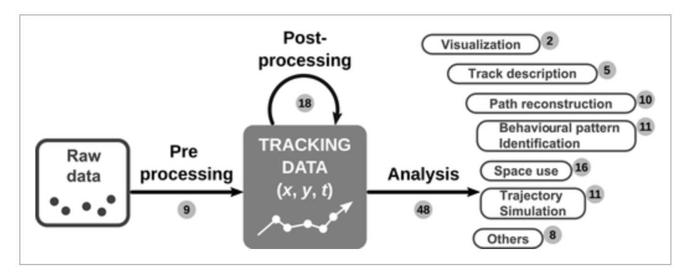
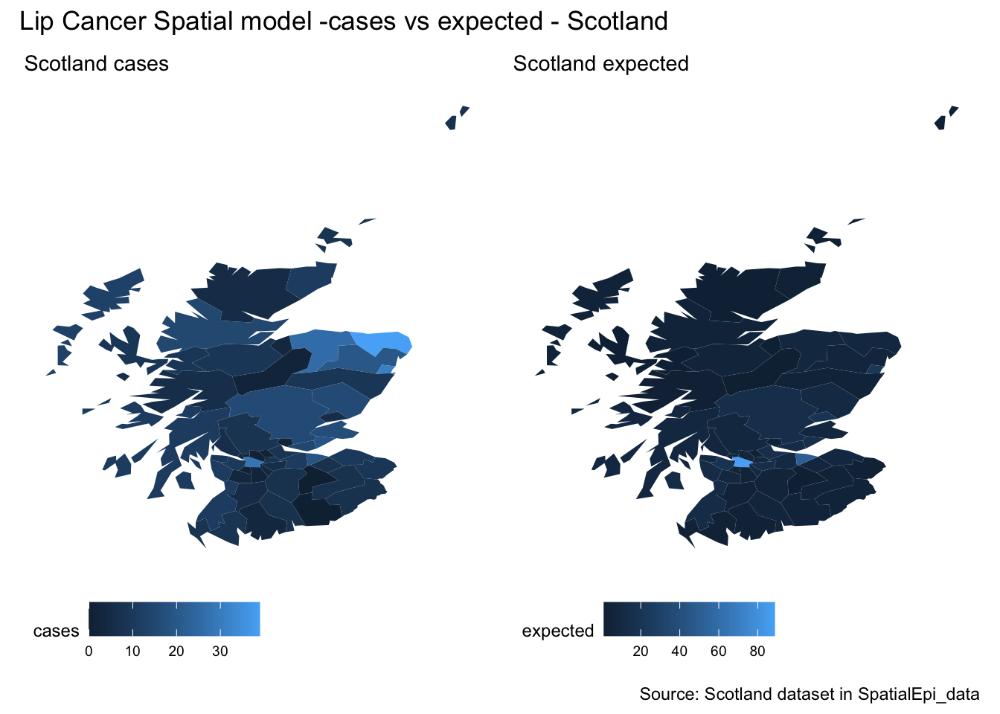

How to Spatial Modeling with R
class: inverse, center, bottom
How to Spatial Modeling with R
.side-text[]
.title-where[ RLadies DC 2022
How to Spatial Modeling with R
September 21-22, 2022]
class: chapter-slide A bit about me
.pull-left[ Federica Gazzelloni is an R enthusiast and has been practicing R spatial participating in the #30DayMapChallenge competition on Twitter last year. She is a mentor within the R4DS community learning on slack and recently participated as one of the diversity scholars at the RStudio::conf2022. She is also an author in the health sector and looking to be more involved with investigations. Prior to that, she taught Mathematics at a high school in Rome and provided professional guidance on how to use excel for work at the European University of Tourism. She loves making data visualizations and applying statistical techniques for model forecasting.]
.pull.right[
]
class: chapter-slide
Learning objectives
At the end you will be able to:
- Make a map!
–
- Understand spatial data complexity
–
- Make a spatial model visualization
Prerequisites
This ice-breaking activity to spatial modeling with R includes two case studies:
- Oregon spotted frog habitat study
- A type of cancer spread in Scotland
To set up install the following packages:
my_packages <- c("tidyverse","purrr","ggthemes",
"maptools","ggmap",
"spdep","sf","spocc",
"dismo","SpatialEpi")
install.packages(my_packages, repos = "http://cran.rstudio.com")
install.packages("remotes")
remotes::install_github("fgazzelloni/oregonfrogs")The GitHub repository for this workshop is here: https://github.com/Fgazzelloni/How-to-Spatial-Modeling-with-R
Session 1
–
- Introduction
–
- Hands-on mapping of Rana Pretiosa around the US
–
- Making spatial assumptions
–
Break and Q&A
–
Session 2
–
- Introduction
–
- Hands-on mapping of a particular form of cancer in Scotland
–
- Making a spatial model
–
Break and Q&A
–
Wrap-up and Q&A
class: chapter-slide
Session 1
Introduction
–
Spatial data is most often represented by one of two data models, vector or raster. In geostatistical models, sampled data are interpreted as the result of a random process.
–
Spatial modeling is an important instrument to guide decision-making dealing with risk-management in different areas, such as public health, econometrics, general ecology, as well as public transportation and real-estate.
–
An important distinction has to be made between spatial model and spatial data model. While data models are important connections between the individual perception of certain events and how those events are being represented and processed with an algorithm, for example as spatial primitives and relationships.
–
Spatial models are defined as process models. Dynamic spatial processes are phenomena that change in time, such as a virus spread, flood formation, and land cover change. A heuristic explanation of how point distances are calculated is to considered wheather the Eulerian or the Lagrangian views are the most suitable ones.
–
“Eulerian models concern about the change of properties (e.g. temperature, land cover) at fixed locations, while Lagrangian models tracks the movement of objects in space.”
As said, one more important distinction is that Geographic Information Systems (GISs) are composed of raster and vector data.
–
In vector data models space is not quantized into discrete grid cells like the raster model, but use points and associated X, Y coordinate pairs to represent the vertices of spatial feature.
–

Spatial models allows for spatial autocorrelation. In general modeling, multicollinearity, or correlation among predictors in the model is used to make predictors selection. In case of spatial modeling, predictors such as longitude and latitude are evidence of important underlying spatial processes at work; an integral component of the data.
–
So, spatial data is considered typically autocorrelated and/or clustered. A simple explanation is related with the independency of correlated clusters with the changing data-information in the spatial cluster.
–
Hence, data may be spatially correlated and observations in neighboring areas may be more similar than observations in areas that are farther away.
–
The analysis of the residual spatial autocorrelation and the prediction of continuous spatial process is called Kriging (or, geo interpolation named after Danie Kringe (South Africa), also known as Wiener–Kolmogorov prediction / distance-weighted average).
–
A spatial model is a representation of various social and natural processes:
- land cover change
- spread of invasive species
- population migration
So, to be more explicit, spatial modeling combines spatial analysis and predictions.

–
Krinking is even the term that defines the best model performance, and so, the best prediction. This term is considered as synonym of prediction in classical data forecasting model techniques.
The integration of GIS and Multicriteria Decision-Making Analysis (MCDA) is key in providing help to decision makers in different areas. GIS-based MCDA use a linear weighted equation to combine the spatial variables.
–
\[y=\sum_{i=1}^n{w_if(x_i)}\]
Where \(W\) defines a spatial neighborhood structure over the entire study region, and its elements can be viewed as weights.
Under this structure, the total number of neighbors in each area is adjusted to obtain a standardized matrix:
\[w_\text{std(i,j)}=\frac{w_{ij}}{\sum_{j=1}^{n}{w_{ij}}}\]
–
There are a number of spatial models that can be used, for Spatial and Spatio-Temporal Modelling, Prediction and Simulation. One is Kriging, while other methods are the Geographically Weighted Regression (GWR) or Inverse Distance Weighting (IDW).
Hands-on
class: chapter-slide
Session 2
Introduction
–
This example is from the {SpatialEpi} package, and it is about Lip cancer in Scotland area.
–
In general, the first metric for disease risk estimation is the incidence, which is a measure of the probability of occurrence of a given medical condition in a population within a specified period of time. More specifically, the risk estimation can be obtained by computing the Standardized Incidence Ratios (SIRs).
–
The ratio of the observed to the expected disease counts: \[SIRi = \frac{Y_i}{E_i}\]
–
( the expected() function of the {SpatialEpi} package )
library(tidyverse)
library(SpatialEpi)
data("scotland")
names(scotland)[1] "geo" "data" "spatial.polygon" "polygon" | county.names | cases | expected | AFF |
|---|---|---|---|
| skye-lochalsh | 9 | 1.4 | 0.16 |
| banff-buchan | 39 | 8.7 | 0.16 |
| caithness | 11 | 3.0 | 0.10 |
| berwickshire | 9 | 2.5 | 0.24 |
| ross-cromarty | 15 | 4.3 | 0.10 |
| orkney | 8 | 2.4 | 0.24 |
–
We can plot the cases versus the expected and visualize them in one plot.
map <- fortify(scotland$spatial.polygon)
case_map <- ggplot(data=scotland$data,
aes(map_id = county.names)) +
geom_map(map = map,aes(fill=cases)) +
expand_limits(x = map$long, y = map$lat) +
labs(title="Scotland cases") +
ggthemes::theme_map()+
theme(legend.position = "bottom")
expected_map <- ggplot(data=scotland$data,
aes(map_id = county.names)) +
geom_map(map = map,aes(fill=expected)) +
expand_limits(x = map$long, y = map$lat) +
labs(title="Scotland expected") +
ggthemes::theme_map() +
theme(legend.position = "bottom")As well as adding some annotations.
library(patchwork)
case_map + expected_map +
plot_annotation(
title = "Lip Cancer Spatial model -cases vs expected - Scotland",
caption = "Source: Scotland dataset in SpatialEpi_data"
)
Model types:
- LR linear regression
- multivariate logistic regression modeling of weights \(w_i\) (animal habitat)
- discriminant analysis (community resilience to environmental disasters)
- support vector machine (SVM)
- decision-trees
- genetic algorithm (GA)
- artificial neural network (ANN) or deep neural network (DNN)
Model adjustment
Base spatial models are adjusted to data-type based on the type of phenomenon that is investigated. As an example, a virus spread would be best represented with a Poisson distribution, of which a log transformation can be applied.
A list of the tools for making models adjustment is to decide whether to use:
- CAR
- Poisson or spatial effect of the log of the Poisson
- Markov chain Monte Carlo (MCMC)
- spatial cross validation resampling
- deterministic or Bayesian model (Integrated nested Laplace approximation (INLA) is a computational less-intensive alternative to MCMC designed to perform approximate Bayesian inference in latent Gaussian models)
Finally, validation is an important step in spatial modeling work. A model can be validated by testing its prediction in another dataset or study area that is different from the dataset or study area where the model was trained, allowing for spatial correlation and spatially correlated risk factors.
Conclusion
This is the end of our tutorial on how to spatial modeling with R.
The most interesting part of this overall introduction is how to manage different packages dealing with both raster and vector data. We now know how to deal with different type of data for making a map, and are aware of the model adjustments that are required for making a spatial model. Important to mention are the weights and the distances, these two factors are very important for influencing the results of a model predictor.
Good luck with your maps! I look forward to seeing your future Twitter posts for the next #30DayMapChallenge edition 2022 which starts on the first of October with the release of the topics for each of the 30 days challenge of November.
class: chapter-slide